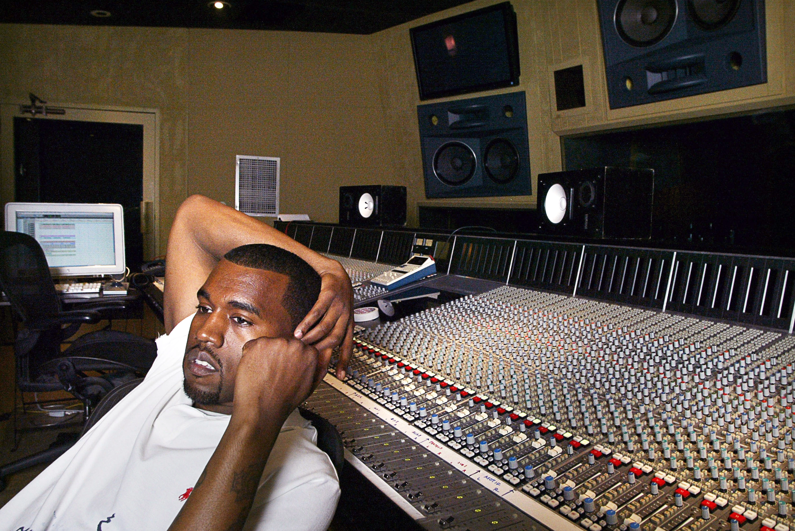
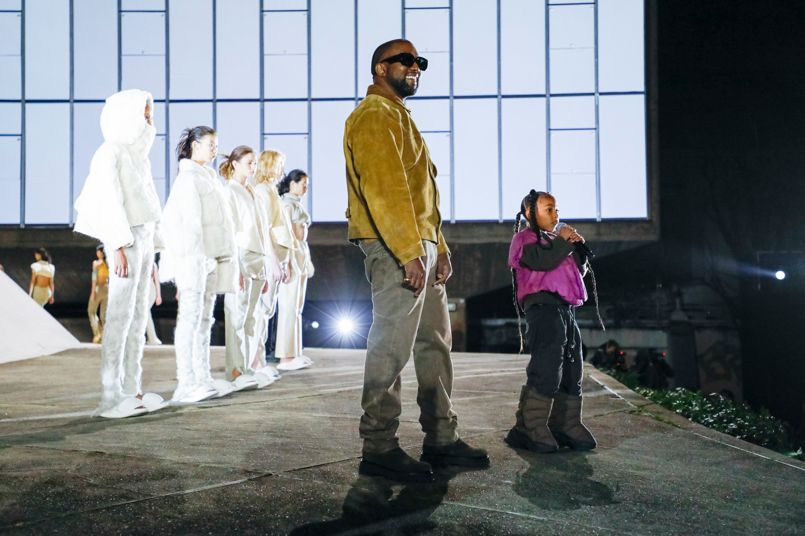
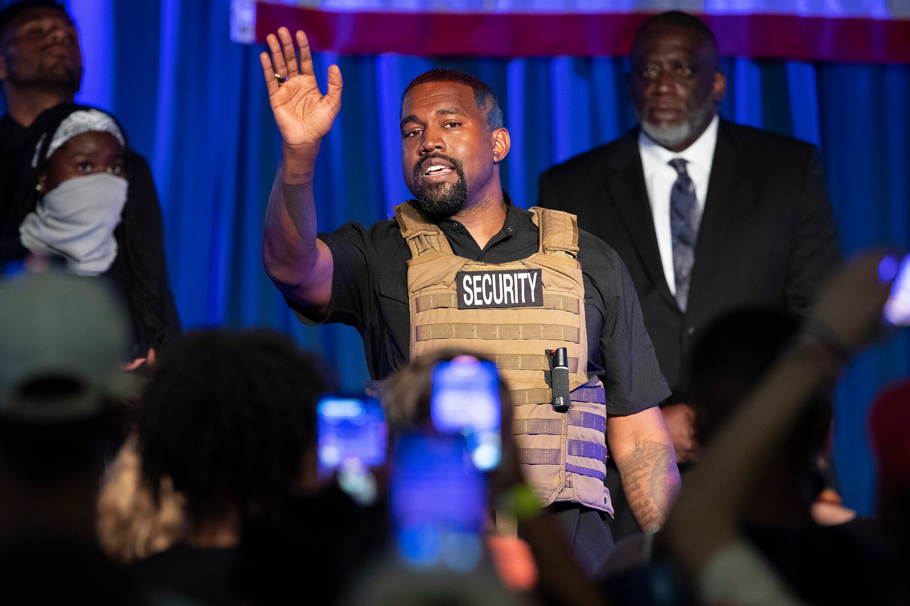

From successful Hip-Hop artist. To thriving high fashion designer. Even as a up and coming politician. Kanye West, born Kanye Omari West, has done it and is doing it all.
Kanye West first gained recognition for his production work for Roc-A-Fella Records, especially on rapper JAY-Z's album "Blueprint" (2001). In 2004 West released his massively successful debut solo album, "The College Dropout," which definitively established West as a critically acclaimed solo artist. West continued to achieve great popular and critical success with subsequent albums, including "Graduation" (2007) and "My Beautiful Dark Twisted Fantasy" (2010).
West forced his way into the industry in 2004 and again in 2011, but it was his proposition in 2015 for Yeezy Season 1 with Adidas that shifted the conversation and left a mark on the industry. And with a growing sneaker empire reported to be worth more than $1 billion Kanye is said to be the most successful Hip-Hop artist in fashion.
Kanye West announced his 2020 United States presidential election campaign through Twitter on July 4, 2020, Independence Day. On July 16, 2020, the campaign filed a Statement of Candidacy with the Federal Election Commission. He entered the election after missing at least six states' deadlines to appear on the ballot as a third-party candidate. West selected Michelle Tidball as his running mate.